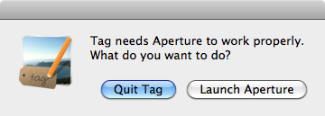

Tag - Annotator for Aperture

Do you also have problems finding photographs but don't like entering lots of keywords manually? Tag can help you! It supports image management with Aperture.
Tag is an application, which communicates with Aperture to offer faster and more intelligent keywording: Select one or multiple photos in Aperture. Use Tag to add keywords to the selected photos. Tag supports you with autocompletion, even for keyword you have never used before and which are so specialized that not even your Macs spell checker knows them. Based on the keywords you have already used, Tag proposes additional sensible keywords like synonyms, more general or more specific terms. Select multiple proposals and add them with a single mouse click.
Launching
Double Click the Tag logo to start the application. As Tag helps you annotate photos in Aperture, you are asked to start Aperture. Click on "start Aperture" to proceed or "end Tag" to cancel.
The Tag window behaves just like a floating toolbar in Aperture, i.e. it always stays on top, floating over your Aperture Window.

Selecting Photos for Annotation
Select one ore multiple photos in a project in Aperture as you are used to. Tag will not recognize if you select projects. Instead, open the project and select photos inside the project. The same holds true for folders.
If some or all of the selected photos have already been annotated with keywords, Tag displays these keywords in the right list. Keywords, which have been attached to all selected photos are highlighted in bold.
You can remove a keyword by selecing it from the list and clicking the button with the left facing arrow.
To remove multiple keywords, holt the Apple key while clicking in the list to select multiple keywords.
Autocompletion
To manually add a keyword to the selected photos, start typing it in the search field at the top. Tag will search for possible keywords starting with the phrase you have just typed and provide you with an autocompletion list. You can either accept one of the proposals or continue typing. Press ESC to abort autocompleting.
To avoid distraction while you are still typing, autocompletion starts 1/3rd of a second after you finish typing. Hence, if you are a fast typist you may have to make a shot break to allow for autocompletion to start.
To add the keyword you have typed or selected from the autocompletion, simply press the "Add Tag" button. The keyword will appear in the list of extisting keywords. It will also be added to the metadata of your photo in Aperture.
Keyword Proposals
Based on the list of existing keywords for the current photo selection, Tag proposes additional keywords in the left list. These proposals are based both on your Aperture database (keywords you have used together in the past) and on our extensive linguistic, geographic and encyclopedic database, when you are working online.
To accept a keyword proposal, select it from the list of proposals and click the button with the right facing arrow. It will appear in the list of existing keywords and be added to the photos' metadata in Aperture.
As with the existing tags, you can select multiple tags to add by holding the Apple key while selecting.
Working Online vs Working Offline
Tag has been designed to use the Kreuzverweis Keyword Webservice. The Webservice offers autocompletion and keyword proposals based on a large database of encyclopedic, linguistic and geographic knowledge. Never the less, it can also work locally, only using information present in your Aperture database.
Per default, Tag always uses the websevice. If you do not want to use the webservice, untick the box at the bottom of the window.
The status field beside the box displays the current status of your connection to the Webservice.